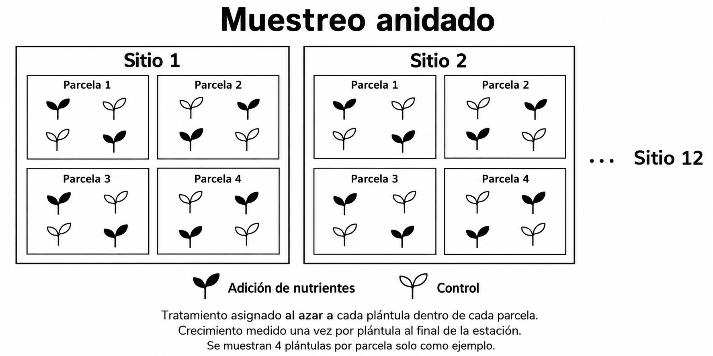
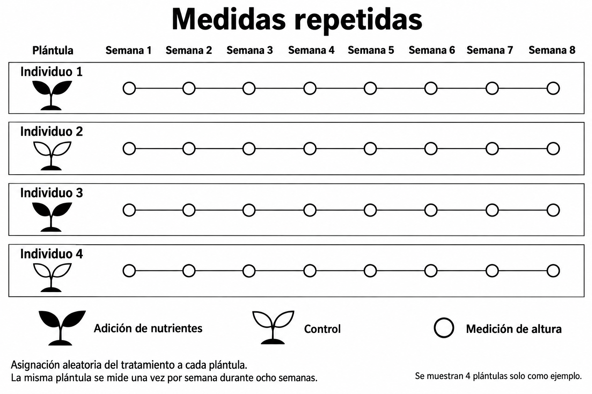
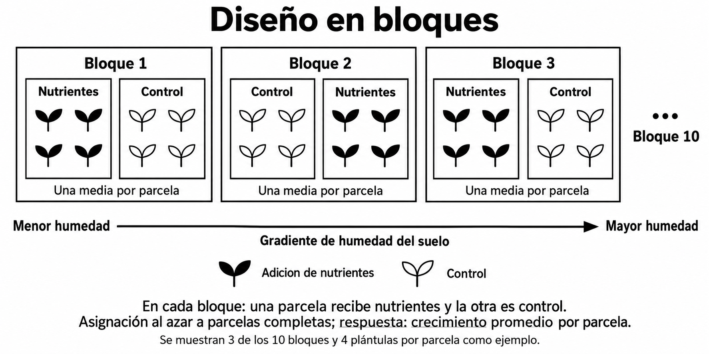
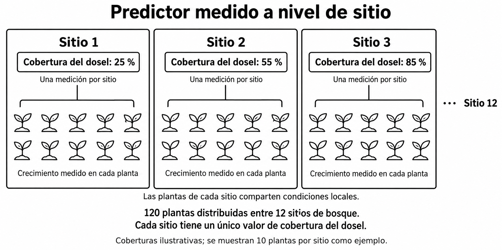
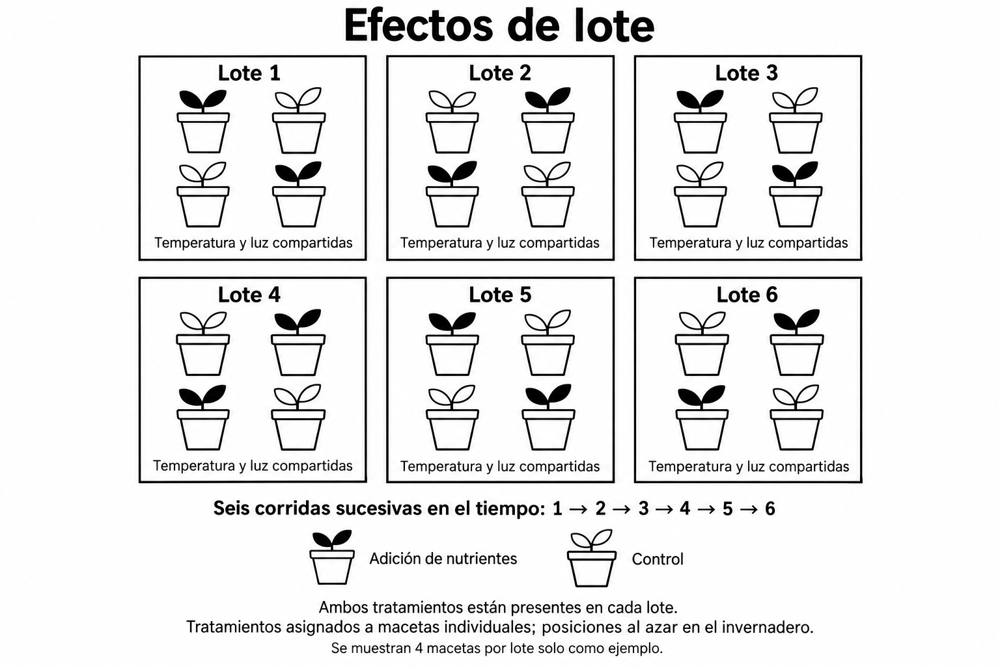

Lab 08: Modelos mixtos y efectos aleatorios
Diseño de estudios, dependencia y estructura de agrupamiento
Introducción
En esta actividad, analizaremos diseños ecológicos para decidir cuándo una estructura de agrupamiento puede requerir efectos aleatorios. En cada caso, consideren qué observaciones comparten condiciones, cuál es la unidad experimental o de muestreo y qué efecto se desea estimar.
Un efecto aleatorio cumple dos funciones que conviene distinguir. Cuando la cantidad a estimar compara entre grupos (por ejemplo, un predictor medido a nivel de sitio), el efecto aleatorio evita tratar las observaciones de un mismo grupo como réplicas independientes (pseudorreplicación). Cuando la cantidad a estimar compara dentro de los grupos (por ejemplo, tratamiento y control dentro de cada bloque), el efecto aleatorio separa la variación entre grupos del error residual y aumenta la precisión de la comparación.
- Grupos de hasta 4 personas. Cada grupo recibe esta introducción, la tabla de referencia y la hoja de trabajo.
- Estaciones: cada uno de los cuatro casos está impreso en tres estaciones alrededor del aula (doce estaciones en total). Varios grupos pueden trabajar el mismo caso al mismo tiempo en estaciones distintas.
- Rotación [5–6 minutos por estación]: en cada estación, lean el caso, discutan las preguntas de “Conversen” y completen la fila correspondiente de la tabla. Al terminar, roten a una estación con un caso que no hayan visto.
- Cierre en grupo [5 minutos]: con los cuatro casos completos, respondan la pregunta de discusión al pie de la tabla.
- Cierre en común [10–15 minutos]: cada grupo presenta un caso; los demás comparan con sus respuestas.
- Bitácora (individual): la última página presenta un caso nuevo. Resuélvanlo individualmente en la bitácora aplicando lo discutido; esa es la entrada calificada.
Los efectos aleatorios se escriben entre paréntesis dentro de la fórmula. A la izquierda de | va lo que varía entre grupos; a la derecha, la variable de agrupamiento. El 1 representa el intercepto.
y ~ x + (1 | grupo)— intercepto aleatorio: cada nivel degrupotiene su propio intercepto (su propia línea base). La pendiente dexes la misma para todos los grupos.y ~ x + (1 + x | grupo)— intercepto y pendiente aleatorios: cada grupo tiene su propio intercepto y su propia pendiente dex.y ~ x + (1 | a/b)— agrupamiento anidado:bestá dentro dea. Equivale a(1 | a) + (1 | a:b): un intercepto por cada nivel deay otro por cadabdentro de cadaa. El orden importa:a/bno es lo mismo queb/a.
Los modelos con efectos aleatorios (modelos mixtos) no se ajustan con lm() ni glm(). Se necesitan paquetes como lme4 (funciones lmer() y glmer()) o glmmTMB (función glmmTMB()), que ya usamos para datos de conteo. Ambos aceptan la misma sintaxis de efectos aleatorios.
Referencia: efectos fijos y efectos aleatorios
| Característica | Efectos fijos | Efectos aleatorios |
|---|---|---|
| Selección de grupos | Los grupos específicos son de interés directo (por ejemplo, comparar tratamiento y control, o machos y hembras). | Los grupos son una muestra aleatoria de una población más amplia (por ejemplo, 20 ranas de una población de miles). |
| Objetivo | Estimar el tamaño del efecto para cada grupo específico. | Estimar y controlar la variación entre grupos. |
| Tamaño de muestra | Puede funcionar con pocos grupos, pero requiere suficientes datos dentro de cada grupo. | Requiere un mayor número de grupos (por lo general, entre 5 y 10 o más) para estimar la varianza con precisión. |
| Interpretación | Se enfoca en los niveles específicos del factor incluidos en el modelo. | Se enfoca en la variabilidad entre los niveles del factor, más que en cada nivel específico. |
| Predictor medido a nivel de grupo | No es posible: el factor fijo de grupo es colineal con el predictor y el efecto de este no se puede estimar. | Permite estimar el efecto del predictor y, a la vez, representar la dependencia entre observaciones del mismo grupo. |
Caso 1. Muestreo anidado
Un equipo de investigación selecciona 12 sitios de bosque de una región. En cada sitio selecciona cuatro parcelas. Dentro de cada parcela asigna al azar la mitad de las plántulas a un tratamiento de adición de nutrientes y la otra mitad a un control. Mide la altura de cada plántula al inicio y al final de la estación de crecimiento; el crecimiento de cada plántula es la diferencia entre ambas medidas, un solo valor por plántula.
Predicción: La adición de nutrientes aumenta el crecimiento de las plántulas.
Cantidad a estimar: La diferencia promedio en crecimiento entre plántulas tratadas y controles en la población de sitios y parcelas representada por la muestra.
Conversen: ¿Qué plántulas comparten condiciones? ¿En qué niveles se asignó el tratamiento y se midió la respuesta?
- Unidad experimental: ¿a qué se le asignó el tratamiento? ¿Es lo mismo que se midió?
- Dependencia: ¿qué observaciones comparten algo (lugar, momento, individuo) que las haga parecerse entre sí?
- Modelo: cada fuente de dependencia es una variable de agrupamiento candidata para
(1 | …). ¿Está una dentro de otra?
Completen: crecimiento ~ tratamiento + ( ________________ )

Caso 2. Medidas repetidas
Un equipo asigna al azar 30 plántulas individuales a adición de nutrientes o control (15 por tratamiento). Mide la altura de cada plántula una vez por semana durante ocho semanas. La tasa de crecimiento de una plántula es la pendiente de su altura en función de la semana.
Predicción: La adición de nutrientes aumenta la tasa de crecimiento en altura.
Cantidad a estimar: La diferencia entre tratamientos en la tasa promedio de crecimiento, expresada en centímetros por semana.
Conversen: ¿Qué observaciones provienen del mismo individuo? ¿Podrían las plántulas diferir en su altura inicial o en su tasa de crecimiento? ¿Qué término del modelo evaluaría la diferencia en tasa entre tratamientos?
- Unidad experimental: ¿a qué se le asignó el tratamiento? ¿Es lo mismo que se midió?
- Dependencia: ¿qué observaciones comparten algo (lugar, momento, individuo) que las haga parecerse entre sí?
- Modelo: cada fuente de dependencia es una variable de agrupamiento candidata para
(1 | …). ¿Está una dentro de otra? - Si graficaran la altura de cada plántula contra la semana, ¿tendrían las 30 líneas el mismo punto de partida? ¿La misma inclinación? ¿Qué parte de la sintaxis permite que cada una difiera?
Completen: altura ~ ________________ + ( ________________ )

Caso 3. Diseño en bloques
Un equipo establece 10 bloques a lo largo de un gradiente de humedad del suelo. Cada bloque contiene dos parcelas experimentales. Asigna al azar una parcela de cada bloque a la adición de nutrientes y la otra al control. Mide el crecimiento promedio de las plántulas en cada parcela.
Predicción: La adición de nutrientes aumenta el crecimiento, luego de tomar en cuenta las diferencias de base entre bloques (humedad del suelo y otras condiciones locales).
Cantidad a estimar: La diferencia promedio entre las parcelas tratadas y controles dentro de bloques comparables.
Conversen: ¿Por qué comparar parcelas dentro del mismo bloque? ¿Qué observaciones comparten condiciones de humedad?
- Unidad experimental: ¿a qué se le asignó el tratamiento? ¿Es lo mismo que se midió?
- Dependencia: ¿qué observaciones comparten algo (lugar, momento, individuo) que las haga parecerse entre sí?
- Modelo: cada fuente de dependencia es una variable de agrupamiento candidata para
(1 | …). ¿Está una dentro de otra?
Completen: crecimiento ~ tratamiento + ( ________________ )

Caso 4. Predictor medido a nivel de sitio
Un equipo mide el crecimiento de 120 plantas distribuidas entre 12 sitios de bosque. Mide la cobertura del dosel una vez por sitio, por lo que todas las plantas de un sitio tienen el mismo valor de cobertura. Las plantas de un sitio también comparten suelo, clima y otras condiciones locales. Mide la altura de cada planta al inicio y al final de la estación de crecimiento. Para cada planta, calcula un solo valor de crecimiento como la diferencia entre ambas mediciones.
Predicción: El crecimiento de las plantas cambia con la cobertura del dosel.
Cantidad a estimar: La pendiente que relaciona la cobertura del dosel con el crecimiento promedio de las plantas entre los sitios de bosque de la región.
Conversen: ¿A qué nivel varía la cobertura del dosel? ¿La información independiente para estimar su relación con el crecimiento proviene principalmente de las 120 plantas o de los 12 sitios? ¿Qué agrupamiento debería representar el modelo?
- Unidad de muestreo: aquí no hay tratamiento. ¿Qué se muestreó? ¿A qué nivel se midió el predictor y a qué nivel la respuesta?
- Dependencia: ¿qué observaciones comparten algo (lugar, momento, individuo) que las haga parecerse entre sí?
- Modelo: cada fuente de dependencia es una variable de agrupamiento candidata para
(1 | …). ¿Está una dentro de otra? - Imaginen que
sitiofuera un factor fijo en el modelo. Dentro de cada sitio, ¿cuánto varía la cobertura? ¿Podría el modelo distinguir el efecto de la cobertura del efecto del sitio?
Completen: crecimiento ~ cobertura + ( ________________ )

Hoja de trabajo grupal
Análisis de los casos
Para cada caso, identifiquen la unidad experimental o de muestreo, indiquen qué observaciones podrían ser dependientes y propongan las variables de agrupamiento que incluirían como efectos aleatorios, si corresponde. Justifiquen su decisión en relación con la predicción.
| Caso | Unidad experimental o de muestreo | ¿Qué observaciones comparten condiciones o individuo? | Efecto(s) aleatorio(s) propuesto(s) y justificación |
|---|---|---|---|
| 1. Muestreo anidado | |||
| 2. Medidas repetidas | |||
| 3. Diseño en bloques | |||
| 4. Predictor a nivel de sitio |
Pregunta de discusión
En cada caso, ¿la cantidad a estimar compara observaciones dentro de los grupos o entre grupos? Si se omitiera el agrupamiento, ¿la incertidumbre del efecto estimado sería demasiado grande o demasiado pequeña? ¿Por qué?
Entrada de bitácora (individual)
Apliquen lo discutido en la actividad a un diseño nuevo. Respondan en su bitácora, de forma individual.
Caso para la bitácora. Efectos de lote
Un equipo cultiva plántulas en macetas individuales y asigna al azar los tratamientos de nutrientes (adición o control) a cada maceta. Debido a limitaciones de espacio, debe realizar el experimento en seis lotes sucesivos en el mismo invernadero. Cada lote incluye 20 macetas, 10 por tratamiento, asignadas al azar a posiciones del invernadero. Las condiciones de temperatura y luz podrían variar un poco entre lotes. Mide la altura de cada plántula al inicio y al final de su lote; el crecimiento es la diferencia entre ambas medidas.
Predicción: La adición de nutrientes aumenta el crecimiento, a pesar de la variación en las condiciones entre lotes.
Cantidad a estimar: El efecto promedio del tratamiento entre los lotes representados por el experimento.

Preguntas:
- ¿Cuál es la unidad experimental? ¿Qué observaciones comparten condiciones?
- ¿Qué variable(s) incluiría como efecto aleatorio y por qué? Escriba el modelo con la sintaxis de R de la página 1.
- ¿A cuál de los cuatro casos de la actividad se parece más este diseño? ¿En qué se diferencia?
- ¿El tratamiento se compara dentro o entre lotes? Si se omitiera el lote del modelo, ¿la incertidumbre del efecto del tratamiento sería demasiado grande o demasiado pequeña? ¿Por qué es importante que cada lote incluya ambos tratamientos?